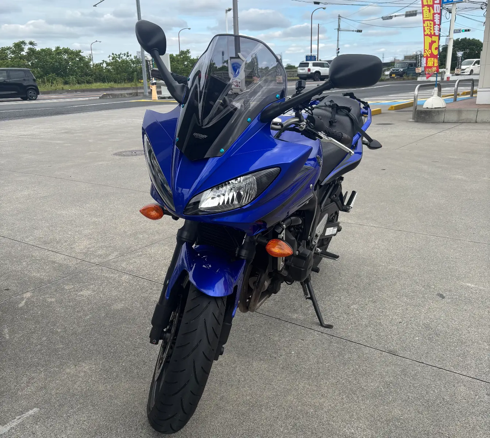
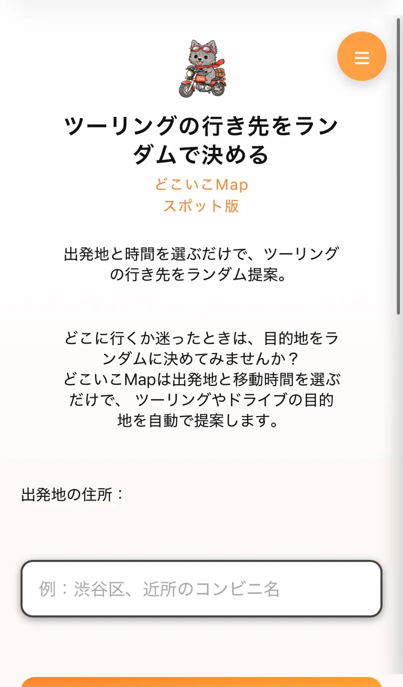
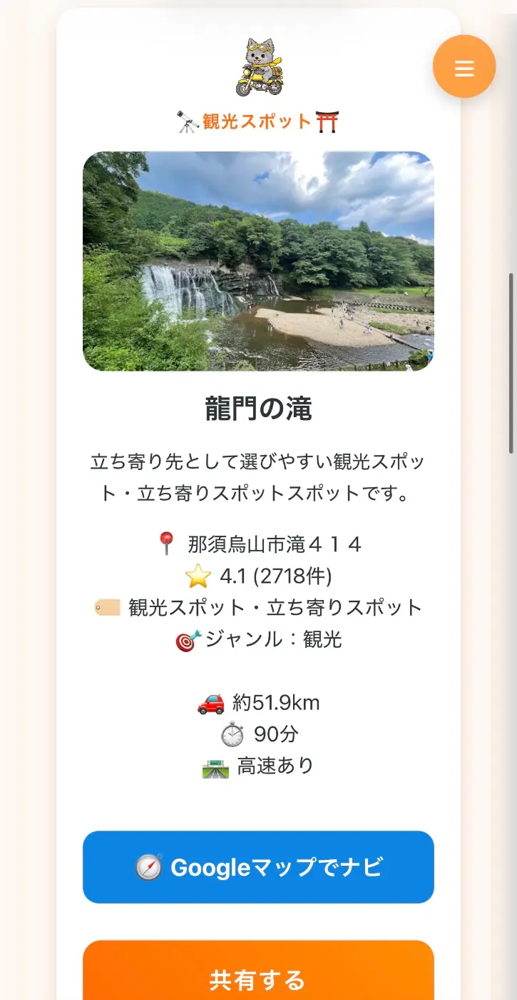

どこいこMap コラム
ツーリング先、どうするか悩む問題。目的地がないときはランダムに決めてみるのもあり！
執筆日：2026/06/08
よくライダーから耳にするワードで、
- ツーリング先迷う
- どこいこうか悩む
- 行きたいところ行き尽くしてて他にないんだよね
そんな方の参考になったら嬉しいです！

もう直ぐバイク歴1年になりますが、実際私も悩んでたことあったなーと思いました。
また、ツーリング仲間との会話でも、《バイクに乗りたいけど行く場がないんだよね》とよく話題になります。
そんなとき、皆さんはどうしてますか？
以前の私は、道の駅巡りをしてました！
王道ですよね！笑
その日によって訪れるバイカーも違うし、季節が違うと周りの景色も変わって、一度訪れててもツーリングの満足度は高いです。
あとは、有名な観光地へ行く！
- 日光巡り
- 宮ヶ瀬ダム
- 秩父巡り
- 江ノ島
- 鎌倉
- などなど
やはり、有名な所では、バイカーも多くヤエーたくさんできて楽しかったです！
今度ライダーたちのヤエー集でまとめてみようかな笑
が、やっぱり他のところも行きたい、、！
ただ調べるのがめんどい。。って時もあると思います。
そんな時、仲間に面白いって言ってもらえるもの作りたい！なんだかやる気のあった私は、じゃあ作っちゃえばいいんだ！と思いました笑
そんなこんなで完成したのが、
どこいこMapです！

私の性格がもろに反映しておりまして、考える時間を無くしたい、てかちょっとゲーム感覚だと面白いんじゃない！？ってかんじでこだわりポイントは下記です！
- ランダムにスポットを提案する
- 提案のレスポンスを早くする
- 結果を見やすくわかりやすく
- 気に入らなかったり、うまくできなかったときは再検索ができる
- なるべくハズレがないスポットを提案して欲しい

これを作ってから、ほぼ行く場所ない問題にかけるストレスが減りました！
結果出て、うーんってなったときは行ったことがあるところに行けばいいし、気になったところはそのまま目的地にしちゃえばいいし！
せっかちな私が作ったので、どこいこMapを使っていただきましたら提案に時間をかけさせません！
楽しんでいただけたら嬉しいです！
※都内検索だと、目的版の自然でデトックス、気持ちのいい道で結果が出ずらい場合がございます。。
都内近郊だとなかなか自然というキーワードに当てはまるいいスポットがないみたいです。。すみません(´･_･`)
ライダーの方に実際に使っていただきましたところ、
- 新しい場所を見つけられた！
- 行き尽くしたと思ってたけどまだまだあった！
- 使える
って嬉しい声をいただきました！！
行き先に迷ったら「どこいこMap」もおすすめ！
ぜひ、どこいく？って迷ってる方！
どこいこMapで目的地を新発見してください！
どこいこMap では、 出発地と片道時間を選ぶだけで、目的地候補をランダムで提案します。
こんな機能があったらいいなとか、ご意見もいただけると嬉しいです！
また、おすすめのツーリングスポットを教えてください！
© どこいこMap